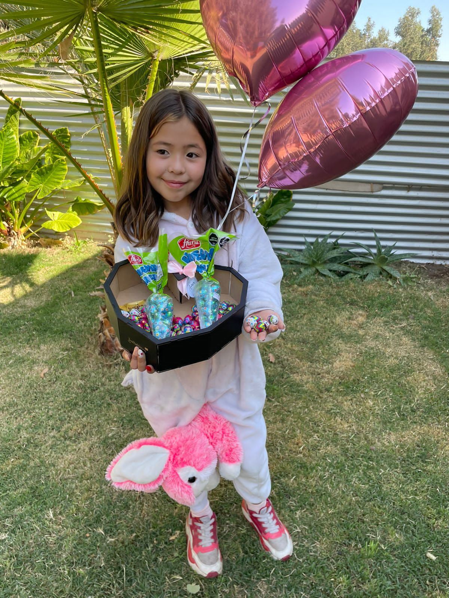

Bienvenido al Portal del 2do Básico B del Colegio San Pedro de Valle Grande.
Este es un sitio creado tanto para que los niños como sus padres y/o apoderados
puedas involucrarse más activamenete en el aprendizaje de cada una de las asignaturas
propias del curso. Aquí podrás encontrar un espacio para informarte, aprender y
estar al día con los contenidos que se van desarrollando en las clases, eventos del colegio
y muchas cosas más.
Diario Mural Digital
Cumpleaños
Hoy 07 de junio, la princesa Florencia Toro está cumpliendo 8 años de vida. Todos sus compañeros y profesores del Colegio San Pedro queremos felicitarla y desearle un día muy hermoso. Florencia esta canción es para tí: ¡¡¡Feliz Cumpleaños!!!
Información para el curso
Recordar evaluación de Matemáticas sobre el calendario. Será el día lunes 13 de junio y deberán repasar los nombres de los días y meses en su correcto orden. también ubicar fechas en el calendario, contar semanas, ubicar días de la semana(ayer, hoy y mañana), entre otros.